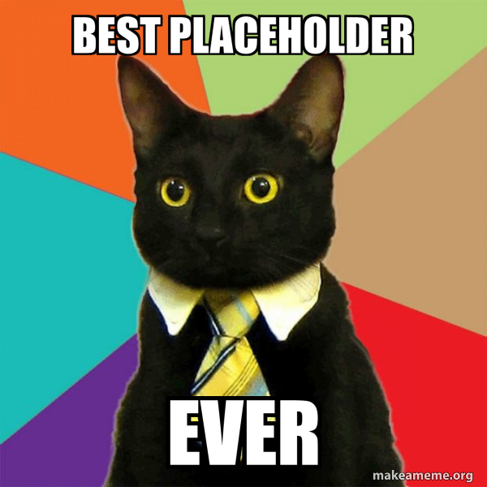

Creators Favourite Meme
Back to Start Page
This is the meme that was last chosen creators favourite meme!
Take a look or watch depending if its video or photo

Past Winners
All the past winners. Enjoy!